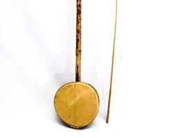
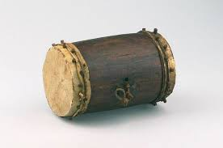

Arababu
Arababu adalah alat musik petik yang terbuat dari kayu dan kulit hewan. Alat musik ini memiliki bunyi yang khas dan biasanya digunakan untuk mengiringi lagu-lagu daerah.

Idiokordo
Idiokordo adalah alat musik petik yang terbuat dari kayu. Alat musik ini memiliki bunyi yang merdu dan biasanya digunakan untuk mengiringi lagu-lagu daerah.

Rumba
Rumba adalah alat musik pukul yang terbuat dari kayu. Alat musik ini memiliki bunyi yang ritmis dan biasanya digunakan untuk mengiringi tarian dan musik.